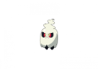
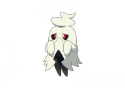
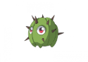
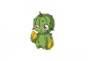

Orphanage Zone
Starting Cave

Left Side
Tier 1:
#001Cloddy
#145Calfter
#325Dinja
Right Side
Tier 1:
#032Stinger
#135
 Fanling
Fanling#199Woozy
Both
Tier 1:
#075Rubby
Experimental Lure
#289Rapnux
#292Florozard
Pinewoods West

Top
Tier 1
#145Calfter
Bottom
Tier 1
#135
Fanling#187Cruff
#325Dinja
Both
Tier 1
#038Shromporo
#075Rubby
Experimental Lure
#289Rapnux
#292Florozard
Pinewoods East

Left
Tier 1
#122Poyal
#190Singletti
#325Dinja
Right
Tier 1
#001Cloddy
Both
Tier 1
#038Shromporo
#199Woozy
Experimental Lure
#289Rapnux
#292Florozard
Pinewoods (Salem's Maze Entrance)

Tier 1
#122Poyal
#038Shromporo
#001Cloddy
#135
Fanling#145Calfter
#187Cruff
#325Dinja
Orphanage West (South of Medic)

Tier 1
#130Snush
#111Hinazuru
#220Frogick
#343Gekoko
Tier 2
#131Shloom
#112Nakazuru
#344Kamelevo
Tier 3
#113Senshizuru
#221Cranoad
Orphanage West Cave Entrance

Tier 1
#022Branipus
#023Cerebrius
#025Skerdi
#026Aferaid
#151Blublub
#165Vodo
#166Malevodo
#222Tesling
#223Teslad
#196
 Croo
Croo#197Cadeto
Orphanage West Cave East

#035Faucefant
#036Draniphant
#025Skerdi
#026Aferaid
#151Blublub
#096Scalder
#196
Croo#197Cadeto
#220Frogick
Orphanage West Cave West

#022Branipus
#023Cerebrius
#035Faucefant
#036Draniphant
#096Scalder
#165Vodo
#166Malevodo
#220Frogick
#222Tesling
#223Teslad
Orphanage West Cave North

#022Branipus
#023Cerebrius
#025Skerdi
#026Aferaid
#151Blublub
#165Vodo
#166Malevodo
#196
Croo#222Tesling
#223Teslad
#197Cadeto
Orphanage West Southmost (Near Pier)

Both
Tier 1
#122Poyal
#130Snush
#220Frogick
#010Spikus
Tier 2
#123Puggard
#131Shloom
#011Spikarm
Tier 3
#124Brauncer
#221Cranoad
Orphanage South

Tier 1
Orphanage East

Dragons, Tyrants, Legendaries, Roamers
Dragons + Tyrants
- You can find #352 Wyverne in the ruined city southeast of Outlands
- You can find #353 Dracon Northwest of Ignitia
- You can find #354 Glamond Northwest of the Frozen Tundra Base warpstone
- You can find #355 Boscage Southeast of the hidden village, map with big mushrooms, you can move over the mushrooms on the right
- You can find #356 Graloon West of Lateria
- You can find #357 Tyrake west of the city in The Drake Isle
- You can find #358 Volt Southeast of Palmaya
- You can find #359 Mystogen west of Immortal Citadel
- You can find #360 Krainnul West of immortal Citadel
- You can find #369 Fona South of Ignitia
- You can find #370 Arqua In the middle of Palmaya
- You can find #371 Nara West of the Hidden Village
- You can find #372 Grunda in the cave Southeast of Desert Outpost
- You can find #373 Ventra Southeast of Drake Isle
- You can find #374 Luxa in Zetta’s Mansion in Cadium
Roamers
Extinct Spawn Zones – Require Experimental Lure – All Grass Patches- Blizstrong – Mineral type – Frozen tundra maps including cave
- Divette -> Drake Isles maps including cave, and also haunted woods including cave
- Florozard – Plant type – pinewoods, outlands, khan woods including caves
- Gradow -> Haunted woods
- Hyphoon -> Drake Isles maps including cave
- Rapnux – Normal type – pinewoods, outlands, including caves
Legendaries Roaming Spawn Zones
(Currently 1/30 chance on all platforms of encounter being added per grass shake, RNG for if they are your encounter – roughly 2-3% encounter rate)- Bolzen -> Cadium maps including amelie’s lab
- Byeol -> Palmaya
- Eurus -> Drake Isles maps not including lab nor cave
- Fane -> Haunted woods, not including cave
- Mulcimer -> Ignitia maps including caves
- Nivalis -> Frozen tundra maps including bunker and tower and cave, inclduing frozen lake cave
- Petram -> Desert including cave
- Tikala -> Khan woods including caves
- Ziegler -> Any wild encounter all maps
- Titan -> Any wild encounter all maps
- Darine -> Any wild encounter all maps